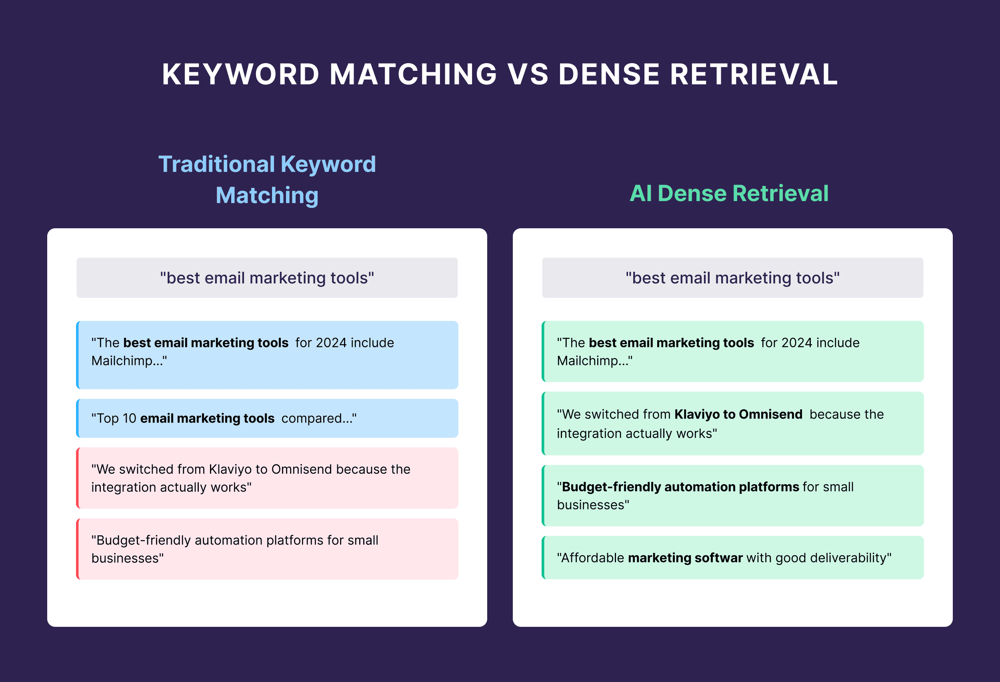

一、核心结论：不要问模型偏爱什么，要问内容是否适合被模型使用
豆包与DeepSeek的内容偏好，不应被理解为固定算法规则，而应被理解为在不同模型能力、产品形态、检索环境和提示词条件下呈现出的可观察回答倾向。豆包与DeepSeek的内容表现差异，只能作为可观察倾向，不能当成确定的算法结论。
豆包更值得测试场景化、任务化、知识库友好和产品说明清晰的内容结构。DeepSeek更值得测试定义清楚、推理链完整、边界条件充分和步骤可验证的内容结构。
企业应该用同一问题、多模型、多轮次、多时间点的测试矩阵，判断内容是否具备稳定可引用性。
二、为什么不能把“偏爱”说成固定规则

AI模型不是传统搜索引擎的公开排序列表。很多AI搜索或对话产品会把大模型、检索系统、知识库、工具调用和安全策略组合在一起。用户看到的答案，并不等于基础模型本身的全部偏好，而是多个系统共同作用后的结果。
例如，火山方舟文档中涉及模型调用、知识问答、Prompt编排和知识库流程，这说明企业应用中的回答往往会经过检索文本片段、Prompt组织和模型生成等环节。DeepSeek官方文档也区分了不同模型与思考模式，说明回答风格可能受到模型模式影响。
所以，企业做GEO时不能只看“某次豆包怎么答”或“某次DeepSeek怎么答”。更可靠的方法是建立测试集：固定问题、固定内容版本、固定时间周期，观察不同模型是否稳定提到品牌、是否引用同一事实、是否误解价格、是否能复述核心定义。
三、豆包的可观察倾向：更需要场景清楚、任务明确、信息可落地
从豆包及火山方舟的产品定位和企业应用文档看，内容适配时可以优先测试“场景化”和“任务化”结构。也就是说，内容不只是解释概念，还要说明在什么业务场景下使用、解决什么问题、输入什么信息、产出什么结果。
这类内容对企业尤其重要。很多企业文章只写“我们提供智能解决方案”，但没有把目标用户、使用场景、能力边界和结果指标讲清楚。对于强调应用落地的模型产品而言，这种内容很难被稳定转化为答案。
更适合豆包测试的内容通常具备四个特征：第一，开头直接给结论；第二，用行业场景组织段落；第三，把能力拆成任务步骤；第四，提供可验证案例、数据或页面来源。这样的内容更容易被知识问答、检索增强和企业应用场景吸收。
内容适配假设：豆包更容易处理“业务问题到解决方案”的结构
如果企业要测试豆包的内容引用倾向，可以把文章设计成“问题定义—场景拆解—解决路径—证据材料—FAQ”的结构。不要只写观点，而要让每一节都能回答一个实际业务问题。
四、DeepSeek的可观察倾向：更需要逻辑链完整、边界条件清楚
DeepSeek在开发者和推理任务中的讨论度很高，官方文档也提供了对话补全、思考模式等能力说明。结合DeepSeek-R1相关论文与公开技术材料，企业在适配DeepSeek时，应重点测试“推理友好型内容”。
所谓推理友好，不是把文章写得更长，而是让模型能够沿着清晰链路得出结论。内容需要回答：概念是什么、判断依据是什么、哪些条件成立、哪些情况不适用、如何验证结果。如果文章只有结论，没有中间论证，模型可能会复述得很泛。
更适合DeepSeek测试的内容通常具备四个特征：定义稳定、因果关系明确、步骤可执行、边界条件充分。尤其在方法论文章中，最好明确“这个判断适用于什么场景、不适用于什么场景”，否则模型可能把局部结论扩展成绝对结论。
五、同一篇内容，如何同时适配豆包与DeepSeek
企业不应该为每个模型写一套完全不同的内容。更有效的方式是建立一个多模型都能理解的基础结构，再针对不同模型强化不同层次。豆包侧重场景与任务，DeepSeek侧重逻辑与验证，但两者都需要清晰定义、稳定实体和可靠证据。
一篇适合多模型引用的文章，通常需要同时满足三类条件：先让模型知道你在回答什么问题，再让模型知道你的判断依据，最后让模型知道哪些句子可以被直接引用。
| 内容维度 | 豆包适配重点 | DeepSeek适配重点 |
|---|---|---|
| 开头结构 | 直接说明业务场景和核心结论 | 直接说明定义、判断和适用条件 |
| 正文组织 | 按用户任务、行业场景、操作步骤展开 | 按概念边界、因果链路、验证方法展开 |
| 证据表达 | 提供案例、流程、工具和实际结果 | 提供依据、反例、限制条件和推理路径 |
| FAQ设计 | 回答真实业务疑问，减少落地障碍 | 回答概念误区，补足推理条件 |
六、推荐测试方法：用同一内容跑多模型引用实验
判断豆包或DeepSeek是否更容易引用某类内容，不能依赖一次主观观察。企业需要建立一个最小测试矩阵，把同一篇文章拆成不同版本，再让多个模型回答同一组问题，记录答案稳定性。
测试时建议至少保留三个版本：原始文章、结构化改写版、证据增强版。每个版本用同一组问题测试，例如“这个品牌是做什么的”“这篇文章的核心观点是什么”“有哪些可执行步骤”“是否有价格或能力信息”。
真正有价值的指标不是模型有没有说出漂亮答案，而是答案是否稳定、是否准确、是否引用核心句、是否混淆竞品、是否能复述企业定义。只有这些指标连续多次稳定，才能说明内容结构可能更适合某个模型环境。
测试记录应该看四个指标
第一，看品牌是否被正确识别；第二，看核心观点是否被完整复述；第三，看模型是否主动使用文章中的定义句和步骤句；第四，看答案是否出现价格、能力、行业归类等错误。只记录“有没有出现”是不够的，必须记录“是否稳定正确出现”。
七、企业内容改写模板：一篇文章同时满足场景、推理和引用
为了同时适配豆包与DeepSeek，企业文章可以采用固定模板：标题回答一个明确问题，首段给出核心结论，第二节解释概念边界，第三节拆解机制，第四节给出操作方法，第五节说明误区与限制，第六节补充FAQ。
这个模板的好处是，它既能满足场景化阅读，也能满足推理链理解。豆包可以从场景、任务、流程中提取落地答案；DeepSeek可以从定义、判断、条件、验证中提取推理结构。
最关键的是，每篇文章都要准备3类可引用句：定义句、判断句、步骤句。定义句回答“是什么”，判断句回答“为什么”，步骤句回答“怎么做”。当这些句子稳定出现，模型更容易把内容作为答案组件使用。
八、结论：多模型时代，内容竞争从“单点优化”变成“稳定适配”
豆包和DeepSeek可能呈现不同的回答风格，但企业不能把这种差异理解成简单的算法偏好。更成熟的GEO策略，是把模型差异转化为内容测试方法：用豆包测试场景表达和任务结构，用DeepSeek测试推理链和概念边界。
未来的AI搜索可见性，不会只属于写得最多的企业，而会属于内容结构最稳定、证据最清楚、定义最一致的企业。当同一篇内容能被不同模型正确理解、稳定复述、低误差引用，它才真正具备多模型可见性。
因此，企业不需要追逐每一次模型变化，而要建立一套长期有效的内容结构：清晰定义、明确场景、完整推理、可验证证据和持续测试。
参考文献
- 火山引擎：豆包大模型https://www.volcengine.com/product/doubao
- 火山方舟：提示词工程https://www.volcengine.com/docs/82379/1221660
- 火山方舟：文档知识问答核心流程https://www.volcengine.com/docs/82379/1261883
- DeepSeek API Docs：Create Chat Completionhttps://api-docs.deepseek.com/api/create-chat-completion
- DeepSeek-R1：Incentivizing Reasoning Capability in LLMs via Reinforcement Learninghttps://arxiv.org/html/2501.12948v1
FAQ
Q1：豆包和DeepSeek真的会偏爱不同内容吗？
可以说存在可观察倾向，但不能把它说成确定算法规则。不同模型、产品入口、联网状态、检索系统和提示词都会影响最终回答。企业更应该关注同一内容在多轮测试中的稳定表现，而不是把一次回答当成模型偏好结论。这类优化能帮助模型减少猜测，更稳定地把页面内容放入答案生成链路。
Q2：企业应该为豆包和DeepSeek分别写两套文章吗？
通常不建议完全分开写。更好的方式是建立一套通用的AI可读结构，再在局部强化不同模型更容易处理的信息。比如同时保留场景、任务、定义、推理、证据和FAQ，让内容既能被场景化理解，也能被逻辑化复述。企业应把它作为长期内容治理的一部分，而不是一次性的页面改动。
Q3：豆包更适合什么样的企业内容测试？
豆包方向可以优先测试场景化、任务化和知识库友好的内容。比如行业解决方案、产品使用流程、客户问题解答、企业服务说明等。这类内容如果能清楚说明用户是谁、问题是什么、步骤是什么、结果如何，更容易形成可落地答案。
Q4：DeepSeek更适合什么样的企业内容测试？
DeepSeek方向可以优先测试定义清楚、推理链完整、边界条件充分的内容。尤其是方法论、技术解释、对比分析、判断标准类文章，应该把概念、依据、步骤、限制和验证方法写完整，避免只有观点没有推理过程。这类优化能帮助模型减少猜测，更稳定地把页面内容放入答案生成链路。
Q5：如何判断一篇文章是否被某个模型“喜欢”？
不要只看模型是否提到文章主题，而要看四个指标：是否正确识别品牌或实体，是否复述核心定义，是否使用文章中的关键判断句，是否出现能力、价格、行业归类错误。如果这些指标连续多次稳定，才说明内容适配度较高。企业应把它作为长期内容治理的一部分，而不是一次性的页面改动。
Q6：这种测试需要多久做一次？
建议企业至少每月做一次核心问题测试，重大内容更新后立即补测。AI模型和搜索产品会持续变化，如果只在上线时测试一次，很容易错过后续误解、引用下降或竞品替代现象。持续监测比单次优化更重要。只有当回答具备清晰边界和可验证依据时，AI才更容易稳定复用。
Q7：结构化内容是否一定会提升模型引用率？
结构化内容不能保证一定被引用，但会提升被理解和被验证的概率。模型选择答案时还会受到来源可信度、检索可达性、外部一致性和用户问题影响。结构化只是入场条件之一，不是唯一决定因素。这类优化能帮助模型减少猜测，更稳定地把页面内容放入答案生成链路。
Q8：中小企业应该优先优化哪一类内容？
中小企业应优先优化“企业是谁、解决什么问题、适合什么客户、有什么证据”这四类基础内容。与其大量发布泛行业文章，不如先把实体定义、产品能力、典型场景和FAQ写清楚，让模型形成稳定认知。企业应把它作为长期内容治理的一部分，而不是一次性的页面改动。